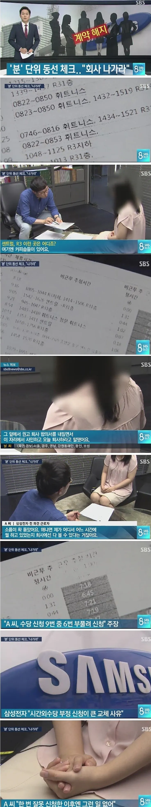

분 단위로 동선 추적해서 업무태만 다 잡아냄 ㅋㅋㅋ
"한번밖에 그런적 없어요" 같은거 안통함 ㄷㄷ

분 단위로 동선 추적해서 업무태만 다 잡아냄 ㅋㅋㅋ
"한번밖에 그런적 없어요" 같은거 안통함 ㄷㄷ
저사람은 진짜 일 안한 사람이잖아
애초에 삼전은 횡령으로 걸린거라서 뭐 저럴필요없이 고소하고 범죄자네 나가 ㅅㄱ하면 되는거아닌가 ㅋㅋㅋ
횡령범이 수치심도 없이 뭔 깡으로 언론과 인터뷰를 하는거냐
저건 횡령죄가 아니라 사기죄일걸? 횡령은 돈을 감시하거나 관리하는 사람이 빼돌릴때 적용되는거고
게시물 제목 봐라
진짜 게시물 제목도 안 보는 놈이 아는 척은 왜 하는거냐 그렇게 티 안내면 죽는 병 걸림?
게시물 제목이랑 무슨상관인건지 설명좀
어쨋거나 제목에나온 횡령도 잘못된 용어인건데ㅠㅠ
왜케 화나신건지 모루겟소요
제목에 엄마없다고하면 엄마가 없는게 되나 왜 제목에 꼽혀서 화가 잔뜩난거지? 혹시 자폐?증상이 아니신지..퓨ㅠㅠ
이건 횡령이 아니라 사기야...
자존감이 떨어지는 사람들이 이런거 지적당하면 발작하던데.
무식하단 것에 대해 뭔가 자격지심이라도 있음?
니가 말한 그대로 적었는데 기분 어떠냐?
다들 착각하고 있는게, 최근에 터진 삼전이슈랑 위 뉴스에나온건 횡령죄가 아닐거야.
https://www.hankyung.com/article/202609081685g
다만 일각에서 거론되는 횡령이나 배임에 대해서는 선을 그었다. 성 변호사는 문제된 직원이 타인의 재물을 보관하거나 타인의 사무를 처리하는 지위에 있다고 보기 어려운 만큼 "횡령죄나 배임죄가 성립하지는 않을 것으로 사료된다"고 밝혔다.
돈을 감시하고 관리하는 주체가 슈킹하는게 횡령이고, 걍 일반직원이 부당수급으로 타먹는건 회사상대로 사기친거니까 사기죄, 저경우엔 사문서위조죄까지 추가.
신혼집은 따로두고 결혼 안 한척 해서 70만원 방 월세 주고 있었는데 이게 횡령 or 사기가 아니야?
횡령은 아니고 사기죄라는 뜻임
저 직원이 회계나 경영쪽 사람이 아니잖아 자기가굴리던 돈 꿀꺽한게 아니고 회사상대로 사기친거니까 사기죄성립임
설명하기귀찮앗는데 대신해줘서 고맙다. 애들이 계솓 황령횡령하는데 법배운 입장에서 ㅈㄴ 답답햇다..
취업시장에 활기가 돌겟네
현대애들은 저런거없나?
아주 폰보고 지랄났던데
저런거 시도하면 노조가 개지랄 난리핌
애들이 이재용이 친근하게 미디어에 노출되고 재드래곤 삼성좋지? 이러니까 샘숭을 쉽게들 생각하는거 보면 돈으로 미는 언플의 위력이 얼마나 큰지 감도 안 옴
시체 탈취하고 공구리 깨고 서버도 묻고 아무리 업무 중 암발병해도 눈도 껌뻑 안 하는 회사인디
소름이 확 돋았어요 ㅋㅋㅋㅋㅋ 팍 씨! 처음부터 철판깔고 들어가려고하네
알겟지만.. 대부분 회사의 미래가 저거다.. 이미 대기업은 동선추적은 다 하고 있음. AI가 사무직 대체해도 되겠다고 회사가 판단하면 바로 칼 꺼내서 댕겅댕겅 할거임.. 그러니까 지금도 근태관리 잘해라..